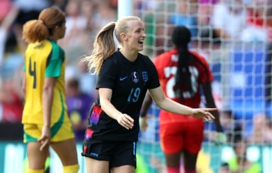

T hree years is an eternity in football. The heady memories of England’s victory over Germany at Wembley in July 2022, which won them a first European Championship, will never disappear but retaining their title would surpass that achievement. Sarina Wiegman’s players arrived in Zurich on Monday to complete their preparations for Euro 2025 and must hit the ground running after being dealt a fiendishly difficult route to glory.
They will begin against France on Saturday at Stadion Letzigrund, hoping victory against a notoriously difficult foe will banish the doubts that have clouded their buildup. England have been dealt a “group of death” that also includes a strong Netherlands side and the debutants Wales. Only two can make it to the quarter-finals, so one of Europe’s leading lights has to miss out. An early victory would send the message that England are here until the conclusion on 27 July.
Their supporters certainly hope to be. Among record sales of more than 600,000 tickets for a tournament whose popularity is burgeoning, 41,000 have been bought by fans from England. The Football Association comfortably sold its allocation of 2,000 for each of England’s Group D games but many more are expected to find their way into the stands.
Switzerland has not been spared the heatwave that has seared an entire continent, although a heavy overnight thunderstorm in the Zurich area ensured preparations could be undertaken more comfortably on Friday. Supporters have enjoyed watching the tournament’s early fixtures on giant screens in a dedicated fan zone; an atmosphere that has otherwise resembled business as usual will ramp up as the nation’s biggest city prepares to stage its first game.
England fans have been trickling into different parts of Switzerland all week. Among the replica shirts seen in Basel, which held the hosts’ opening-night match against Norway on Wednesday, was one bearing the name of Aggie Beever-Jones. The Chelsea striker, who will turn 22 on the day of the final, is one of the bright new hopes in a squad that has seen significant upheaval since sweeping all before them.
Wiegman was forced to reject suggestions of a crisis upon naming her squad last month after the senior players Mary Earps and Fran Kirby retired from international football. A third, Millie Bright, declared herself unavailable for selection in Switzerland. All three played in the Euro 2022 final; Bright had captained England at the 2023 World Cup, whose final they narrowly lost against Spain.
Aggie Beever-Jones is one of the new crop of England players who were not part of the Euro 2022 triumph.Photograph: Nigel French/Getty Images/Allstar
Kirby had learned she would not make the cut this summer and the goalkeeper Earps had been gradually phased out of a starting position. Nonetheless they have been integral to England’s rise and there are fears that the class of 2025 will lack the nous needed for a draining month of tournament football.
A 7-0 friendly victory over Jamaica on Sunday provided the kind of send-off that can clear heads. Ella Toone, one of the goalscoring heroes on that special Wembley afternoon, was on target twice to boost the feelgood factor. England can also point out that they beat Spain , the overwhelming favourites, in February.
England and Wales can look forward to a historic meeting in St Gallen on 13 July. Wales’ progress has been a beacon for smaller nations and they may yet have a say in their bitter rivals’ fate. A positive result for Rhian Wilkinson’s side against the Netherlands on Saturday could leave the group wide open. England’s clash with France, though, will be the first true heavyweight tussle of a tournament whose polished start bodes well.
European football’s governing body, Uefa, was happy with the smooth running of Switzerland’s long-awaited opener. Perhaps the only disappointment was that the host nation were beaten 2-1 despite being the better side. Local hopes have not been particularly high in the buildup, an inexperienced Switzerland team having struggled this year, but a similar level of performance in their second two group games could be enough for progress to the quarter-finals.
That would maintain the positive feeling in a country whose enthusiasm for football tends to bubble around the surface. Some senior figures inside Uefa have privately expressed concerns that their affordable ticketing policy could backfire: given Switzerland’s affluence, a 25 franc (£23) outlay might easily be written off if something more interesting comes up. But there was plenty to allay those fears when 29,520 filled Stadion Wankdorf in Berne to watch Spain make an early statement in overpowering Portugal on Thursday. It was the largest crowd for a European Championship group stage game not featuring the home country and may have set a tone for the next three weeks.
The shocking deaths of Diogo Jota, the Liverpool and Portugal forward, and his brother André Silva left a cloud over that game and have devastated an entire sport. If nothing else, perhaps Euro 2025 can help return the tiniest crack of light. England hope this is another moment to shine.